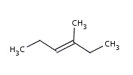
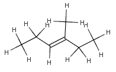

The Hydrogen atoms are included in the molecule implicitly, explicitly or both. The implicit hydrogen count is calculated from the valence of the atom. It equals the valence of the atom minus the valence calculated from the bond connections. It is accurate if and only if there is no further modification on the structure since the last valence check.
The following example demonstrates how to get the implicit / explicit hydrogen count of the atoms:
import chemaxon.calculations.Hydrogenize;
//import a simple chain
Molecule mol = MolImporter.importMol("CCNCCCCCNCC");
// check valences
mol.valenceCheck();
for (int i = 0; i < mol.getAtomCount(); i++){
MolAtom atom = mol.getAtom(i);
int implicitH = atom.getImplicitHcount();
int explicitH = atom.getExplicitHcount();
System.out.println(i+"th atom has "+implicitH+" implicit and "
+explicitH+" explicit Hydrogens.");
}
The implicit hydrogens can be converted to explicit ones and vice versa.
The following methods are available in chemaxon.calculations.Hydrogenize class to convert implicit hydrogens to explicit ones:
In the first method the coordinate refinement to avoid atom collisions
can be skipped using the OMIT_POSTCLEAN option.
You can convert implicit Hydrogens to explicit ones without additional cleaning:
//import a simple chain
Molecule mol = MolImporter.importMol("methylhexene.mol");
Hydrogenize.addHatoms(mol, null, MoleculeGraph.OMIT_POSTCLEAN);
|  |  | |
| original methylhexene molecule | with OMIT_POSTCLEAN option | without OMIT_POSTCLEAN option |
The following methods are available in chemaxon.calculations.Hydrogenize class to convert explicit hydrogens to implicit ones:
In the first three methods it is possible to define which type of Hydrogen atoms should be implicitized:
The following example shows how to convert non-charged explicit hydrogens to implicit ones:
Hydrogenize.removeHAtoms(molecule, MoleculeGraph.ALL_H & ~MoleculeGraph.CHARGED_H);
For query molecules it is possible to define the number of Hydrogen atoms
needed to have in the target structure. Either define it explicitly by
adding the Hydrogen atoms to the specified atoms or implicitly by setting
implicit hydrogen count. If the implicit hydrogen count is specified
then it is stored in the atom and not calculated from the valence any more.
The example below shows how to define the query implicit hydrogen count:
atom.setImplicitHcount(2);